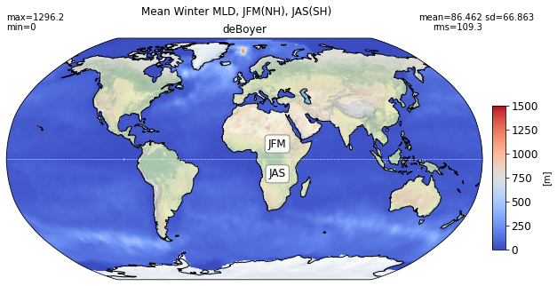
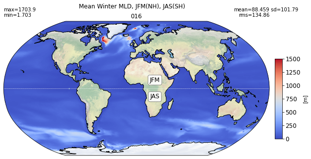
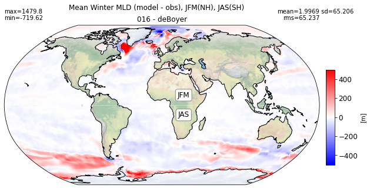
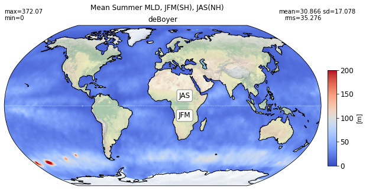
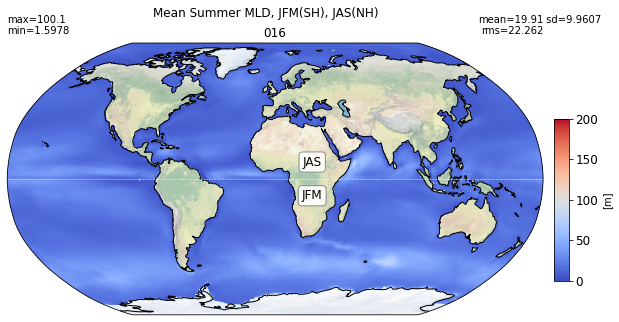
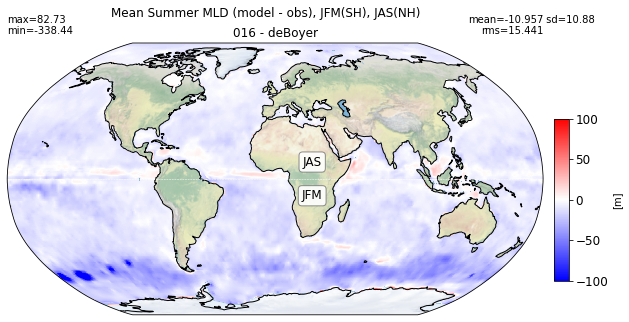
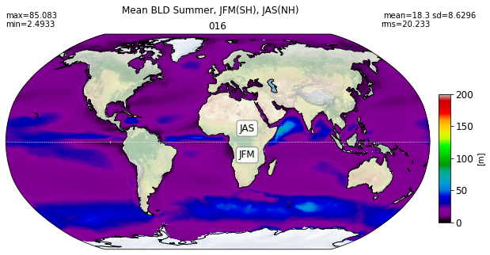
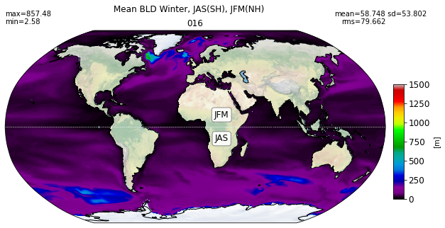

2D Surface Fields
Contents
2D Surface Fields¶
%%capture
# comment above line to see details about the run(s) displayed
from misc import *
from mom6_tools.m6plot import myStats, annotateStats
import cartopy.crs as ccrs
import cartopy.feature
import intake
%matplotlib inline
Mixed layer depth¶
obs = 'mld-deboyer-tx2_3v2'
# load obs-based mld from oce-catalog
catalog = intake.open_catalog(diag_config_yml['oce_cat'])
print('\n Reading climatology from: ', obs)
mld_obs = catalog[obs].to_dask().where(grd_xr[0].wet > 0.)
months = [0,1,2]
obs_JFM = np.ma.masked_invalid(mld_obs.mld.isel(time=months).mean('time').values)
months = [6,7,8]
obs_JAS = np.ma.masked_invalid(mld_obs.mld.isel(time=months).mean('time').values)
obs_winter = obs_JAS.copy(); obs_summer = obs_JAS.copy()
j = np.abs( grd[0].geolat[:,0] - 0. ).argmin()
obs_winter[j::,:] = obs_JFM[j::,:]
obs_summer[0:j,:] = obs_JFM[0:j,:]
bbox_props = dict(boxstyle="round", fc="w", ec="0.5", alpha=0.9)
def add_labels(ax, nh='JFM', sh='JAS'):
ax.plot([grd[0].geolon[0,0], grd[0].geolon[0,-1]], [0,0], 'w--', lw=0.5, transform=ccrs.PlateCarree())
ax.text(25, 10, nh, ha="center", va="center", size=12, bbox=bbox_props, transform=ccrs.PlateCarree())
ax.text(25, -10, sh, ha="center", va="center", size=12, bbox=bbox_props, transform=ccrs.PlateCarree())
Reading climatology from: mld-deboyer-tx2_3v2
def plot_map(da, area, grd, label, vmin=None, vmax=None, suptitle='',
nh='JFM', sh='JAS', cmap='coolwarm'):
sMin, sMax, sMean, sStd, sRMS = myStats(np.ma.masked_invalid(da), area)
fig = plt.figure(figsize=(10, 5))
ax = fig.add_subplot(1, 1, 1, projection=ccrs.Robinson())
plt.suptitle(suptitle)
pc = ax.pcolormesh(grd.geolon_c, grd.geolat_c, da,
transform=ccrs.PlateCarree(),vmin=vmin, vmax=vmax,
cmap=cmap)
#ax.set_title(label + ', '+ da.description)
ax.set_title(label)
annotateStats(ax, sMin, sMax, sMean, sStd, sRMS)
add_labels(ax, nh=nh, sh=sh)
cax = fig.add_axes([0.9, 0.22, 0.02, 0.45])
cbar = plt.colorbar(pc, cax=cax, label='[m]')
cbar.ax.tick_params(labelsize=12)
ax.set_global()
ax.stock_img()
ax.coastlines();
return
Winter¶
%matplotlib inline
title = 'Mean Winter MLD, JFM(NH), JAS(SH)'
try:
area= grd[0].area_t
except:
area= grd[0].areacello
plot_map(obs_winter, area, grd[0], 'deBoyer',
vmin=0, vmax=1500, suptitle=title)

title1 = 'Mean Winter MLD, JFM(NH), JAS(SH)'
title2 = 'Mean Winter MLD (model - obs), JFM(NH), JAS(SH)'
for path, case, i in zip(ocn_path, casename, range(len(casename))):
da = xr.open_dataset(path+case+'_MLD_winter.nc')
try:
area= grd[i].area_t
except:
area= grd[i].areacello
# model
plot_map(da.MLD_winter.values, area, grd[i], label[i],
vmin=0, vmax=1500, suptitle=title1)
# model - obs
diff = (da.MLD_winter.values - obs_winter)
plot_map(diff, area, grd[i], label[i] + ' - deBoyer',
vmin=-500, vmax=500, suptitle=title2, cmap='bwr')


Summer¶
title = 'Mean Summer MLD, JFM(SH), JAS(NH)'
try:
area= grd[0].area_t
except:
area= grd[0].areacello
plot_map(obs_summer, area, grd[0], 'deBoyer', vmin=0, vmax=200,
suptitle=title, nh='JAS', sh='JFM',)

title1 = 'Mean Summer MLD, JFM(SH), JAS(NH)'
title2 = 'Mean Summer MLD (model - obs), JFM(SH), JAS(NH)'
for path, case, i in zip(ocn_path, casename, range(len(casename))):
da = xr.open_dataset(path+case+'_MLD_summer.nc')
try:
area= grd[i].area_t
except:
area= grd[i].areacello
# model
plot_map(da.MLD_summer.values, area, grd[i], label[i],
vmin=0, vmax=200, suptitle=title1, nh='JAS', sh='JFM')
# model - obs
diff = (da.MLD_summer.values - obs_summer)
plot_map(diff, area, grd[i], label[i] + ' - deBoyer',
vmin=-100, vmax=100, suptitle=title2, nh='JAS',
sh='JFM',cmap='bwr')


Boundary layer depth¶
for path, case, i in zip(ocn_path, casename, range(len(casename))):
ds1 = xr.open_dataset(path+case+'_BLD_summer.nc')
ds2 = xr.open_dataset(path+case+'_BLD_winter.nc')
summer = np.ma.masked_invalid(ds1.BLD_summer.values)
winter = np.ma.masked_invalid(ds2.BLD_winter.values)
try:
area= grd[i].area_t
except:
area= grd[i].areacello
# summer
plot_map(summer, area, grd[i], label[i],
vmin=0, vmax=200, suptitle="Mean BLD Summer, JFM(SH), JAS(NH)",
nh='JAS', sh='JFM', cmap='nipy_spectral')
# winter
plot_map(winter, area, grd[i], label[i],
vmin=0, vmax=1500, suptitle="Mean BLD Winter, JAS(SH), JFM(NH)",
cmap='nipy_spectral')

